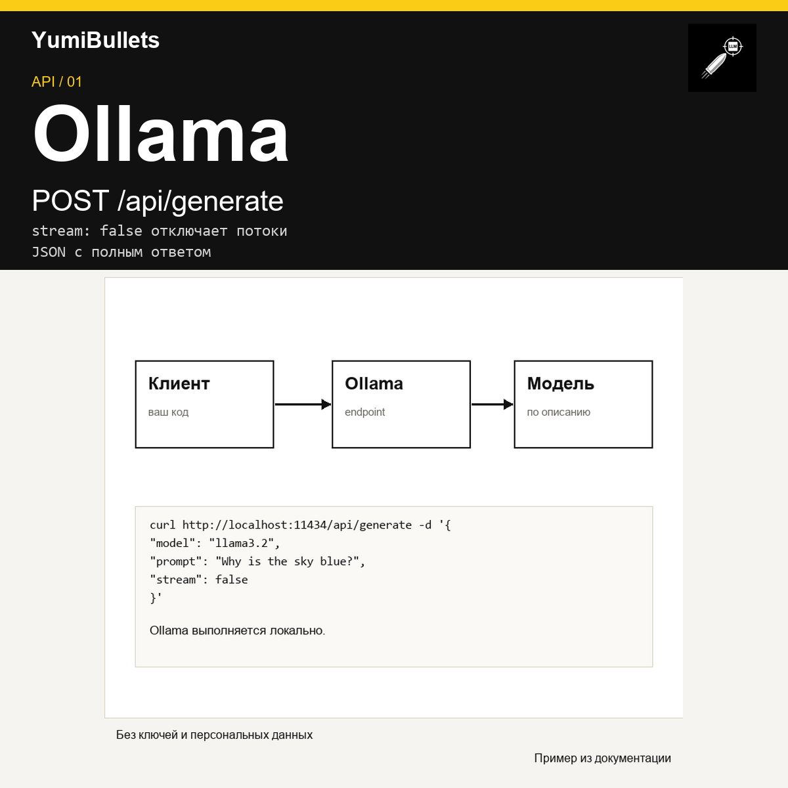

Получить полный ответ от Ollama одним запросом
Ollama по умолчанию возвращает ответ модели частями. Параметр stream: false переключает API на режим единственного ответа — весь текст приходит в одном JSON-объекте.

Ollama по умолчанию возвращает ответ модели частями. Параметр stream: false переключает API на режим единственного ответа — весь текст приходит в одном JSON-объекте.